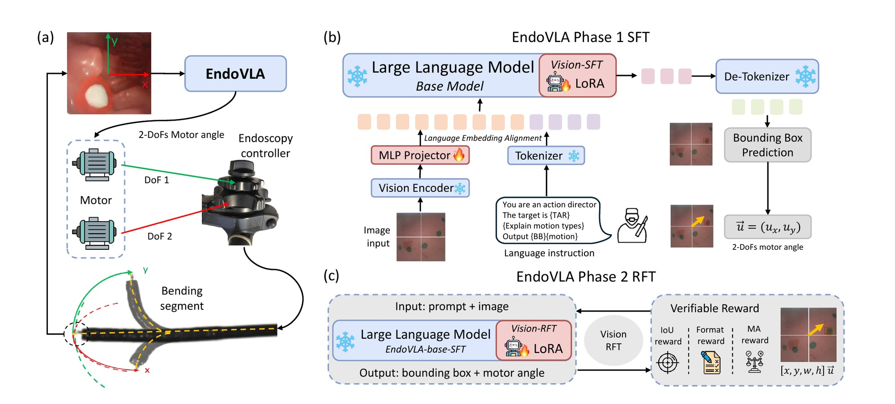
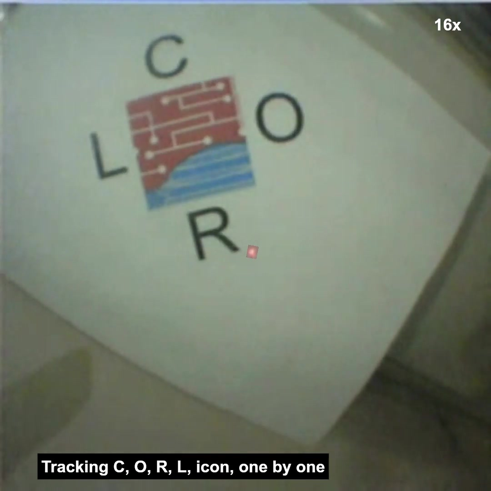

Language grounding
Surgeon prompts identify the target and desired tracking behavior.
Vision-language-action · Robotic endoscopy
From surgeon instruction to continuous endoscope motion.

 CoRL 2025
CoRL 2025

Why EndoVLA
Autonomous tracking can reduce the attention required to keep lesions and procedural landmarks in view. Conventional systems split perception, planning, and control into separately tuned components, making them difficult to adapt when anatomy, targets, or instructions change.
EndoVLA maps endoscopic images and surgeon-issued prompts directly to robot actions. The same policy handles polyp tracking, abnormal-mucosa following, and circular-marker tracking for circumferential cutting.
Surgeon prompts identify the target and desired tracking behavior.
Supervised learning establishes the policy; task-aware rewards refine it.
The policy generalizes to new scenes and longer sequential tasks.
Training strategy
The first phase uses supervised fine-tuning on EndoVLA-Motion to learn the relationship among image observations, language prompts, and robot motion. The second phase applies reinforcement fine-tuning with task-specific rewards.
This division addresses two practical limitations of robotic endoscopy: limited demonstrations and domain shift between controlled training data and changing endoscopic scenes.

CoRL presentation
The narrated video introduces the tracking problem, training strategy, experimental platform, and representative results.
Evaluation
The experiments evaluate lesion tracking, mucosal-region following, and adherence to predefined circular markers. The paper reports improved endoscopic tracking and zero-shot transfer to general scenes and more demanding sequential tasks.

Publication
If this work is useful, please cite the PMLR publication.
@inproceedings{kit2025endovla,
title={EndoVLA: Dual-Phase Vision-Language-Action
for Precise Autonomous Tracking in Endoscopy},
booktitle={Conference on Robot Learning},
year={2025}
}